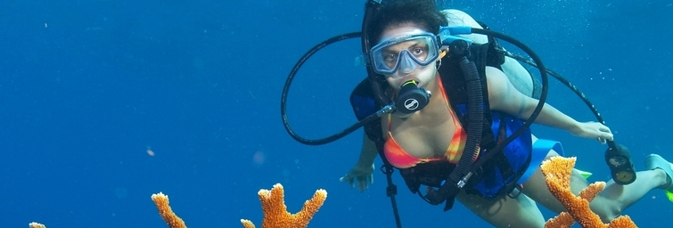

Back To Services >>
We invite you to explore another world with us. If you want a real adventure, not just a tourist attraction, this is for you. No experience necessary!
Cost:
1 Person - $125.00
2 or More - $110.00 per person
Price includes all gear
Time: About two hours
What to Bring: Swimsuit/Trunks & a towel
Dive Location: Casino Point Dive Park
Reservations Suggested
Introductory Dives
Have you ever watched a discovery channel special as divers explore amazing reefs teeming with life and thought about exploring this world yourself? You can! No experience necessary! In just a little over two hours your personal instructor will introduce you to the knowledge and skills necessary to be safe in the water and you will make a [???] dive to as deep as 40' feet. This is for real. You can be there. Bring a sense of adventure and we can make it happen. Dive Catalina does [???] of these Introductory or Tandem Scuba Dives than [???] on the West Coast. Our instructors are the best [???] and our safety record is perfect. Some features that make our program so successful are:
- One-to-one ratio. Each diver has a personal instructor
- Only necessary information and skill are presented
- No skills are done underwater
- The dive proceeds at your pace
We invite you to explore another world with us. If you want a real adventure, not just a tourist attraction, this is for you. No experience necessary!
Cost:
1 Person - $125.00
2 or More - $110.00 per person
Price includes all gear
Time: About two hours
What to Bring: Swimsuit/Trunks & a towel
Dive Location: Casino Point Dive Park
Reservations Suggested